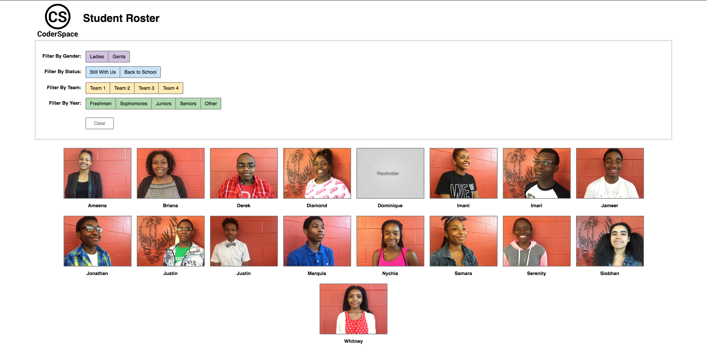
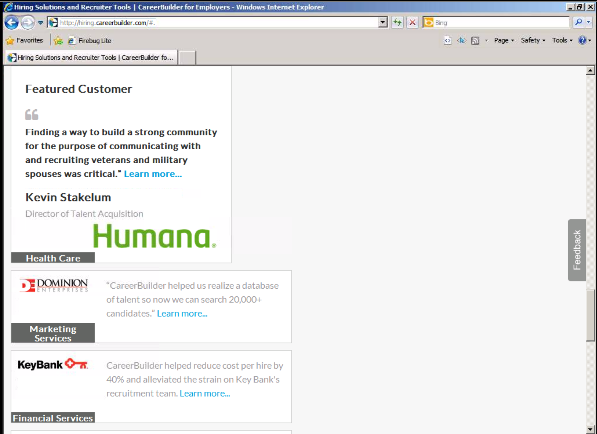

Intro to Flexbox
I’m Arelia
@arelia
Web Developer
CareerBuilder
Instructor
CoderSpace
What is Flexbox?
What is it good for?
Dynamic content
Responsive layouts
Uniform height/width across elements
(Easy) Vertical centering
Changing order
Getting Started
Begin with a flex container (the parent element)
Getting Started
Understand which is the main axis and cross axis
Demo

Flex Parent Properties
Display: flex;
Flex Parent Properties
Flex-direction:
row
|| row-reverse || column || column-reverse;
Flex Parent Properties
Flex-wrap:
nowrap
|| wrap || wrap-reverse;
Flex Parent Properties
Flex-flow: <flex-direction> <flex-wrap>;
Flex Parent Properties
Justify-content:
flex-start
|| flex-end || center || space-between || space-around;
Flex Parent Properties
Align-content: flex-start || flex-end || center || space-between || space-around ||
stretch
;
Flex Parent Properties
Align-items: flex-start || flex-end || center || baseline ||
stretch
;
Flex Child Properties
Order: <integer>;
Flex Child Properties
Flex-grow: <non-negative number>;
Flex Child Properties
Flex-shrink: <non-negative number>;
Flex Child Properties
Flex-basis: <length>;
Flex Child Properties
Flex: <flex-grow> <flex-shrink> <flex-basis>;
Flex Child Properties
Align-self: auto || flex-start || flex-end || center || baseline || stretch;

Resources
CSS Tricks Guide to Flexbox:
https://css-tricks.com/snippets/css/a-guide-to-flexbox/
Flexbox Froggy:
http://flexboxfroggy.com/
Guide to Flexbox without Flexbox:
https://kyusuf.com/post/almost-complete-guide-to-flexbox-without-flexbox
Rachel Andrew:
https://rachelandrew.co.uk/
Jen Simmons:
http://jensimmons.com/
Thank You